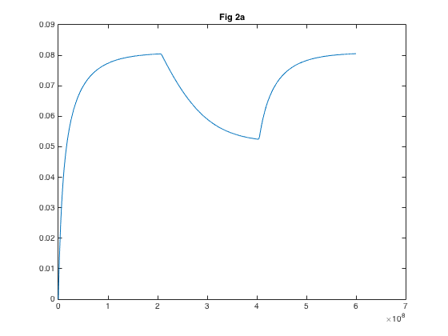
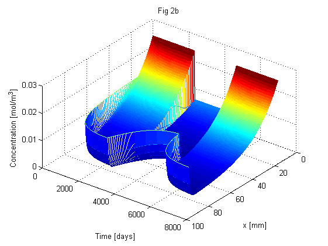
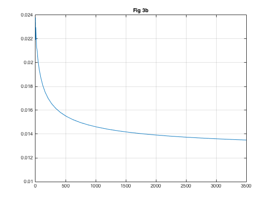
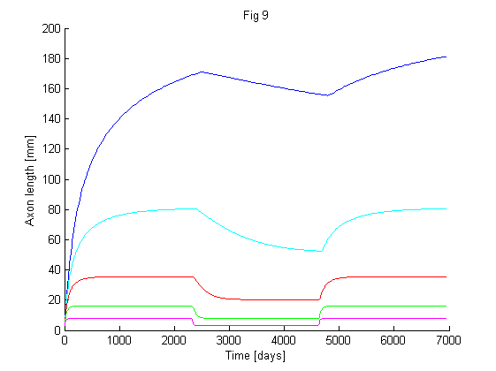

This is the readme for the models associated with the paper: Diehl S, Henningsson E, Heyden A (2016) Efficient simulations of tubulin-driven axonal growth. J Comput Neurosci To run the matlab model, after downloading and extracting this archive: in the matlab prompt change to the folder that contains the files and enter the program name: axon_growth_simulation_with_time_and_space_scaling It runs for about a minute and then type on the matlab prompt: make_graphs You should see these graphs similar to Figure 2a, 2b and 3b from the paper:    See also the script parameter_studies.m which gives an example of how the code can be used to perform parameter studies. The script reproduces Figure 9 from the paper: 